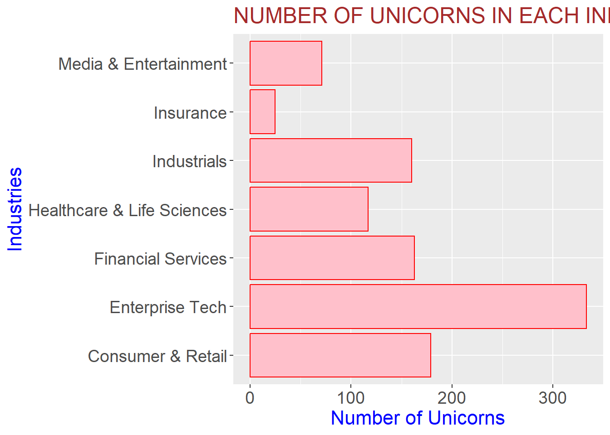

Unicorn Startups’ Data Analysis Report
About the Data
We scraped the data about the Unicorn Startups in the World from CB Insights and Wikipedia which has collected data from IMF’s World economic outlook and World Bank’s Data.
The variables extracted are as follows:
- Company
- character
- Startup’s name
- Valuation
- integer
- Companies’ Valuation
- Date Joined
- Unicorn joining Date
- Country
- character
- Country of origin
- City
- character
- City of origin
- Industry
- character
- Type of industry. This has been sub-classified into -Media & Entertainment -Industrials -Consumer & Retail -Financial Services -Enterprise Tech -Healthcare & Life Sciences -Insurance
- Select Investors
- Character
- Investors’ Name The data consists of Unicorn Startups across different countries in decreasing order of their Valuation.
The data consists of 1050 data points with 7 variables. This data consists of We also have additional variables for every country for 2021:
- Population
- GDP
- Population Density
- GDP Growth Rate
Obtaining the Data
The data was obtained from the following sources:
Biases in the Data
- Biases in Methodology Our data collection methodology involves scraping information from CB Insights. It’s important to note that the status of unicorn companies, defined as those with a valuation exceeding $1 billion, can be dynamic. Companies may transition out of unicorn status due to factors such as going public or experiencing a decrease in valuation. This fluidity introduces potential biases into our dataset. As the unicorn landscape evolves over time, periodic updates and considerations for these status changes are essential. Acknowledging these methodological nuances is crucial for a nuanced interpretation of the data, as it reflects the dynamic nature of the startup ecosystem.
Interesting Questions
From which country does the largest number of unicorns originate?
What is the correlation between GDP and the presence of unicorns in a region?
Within the startup landscape, which industry exhibits the highest number of emerging unicorns?
During which specific years did the majority of unicorns enter the market?
How has the COVID-19 pandemic impacted the growth and trajectory of unicorns?
How many unicorns have women as founders or co-founders?
Is there a relationship between a Country’s growth rate and startup success?
During which phase of the economic cycle is it most advantageous to initiate a new company?
Which nations boast the highest number of female founders among unicorn startups?
In terms of unicorn startups, which countries exhibit the highest percentage of female founders?
Which City is favourable for the particular type of Industry ?
Important Visualisations
Which Country to choose to start a Startup?
##### **USA** and **China** are the countries containing most of the unicorns.GDP relation with unicorn

- There is Positive correlation between GDP and the presence of unicorns in a region
- Unicorns mostly emerge from developed countries with India and China being an exception.
Industry Analysis
In this plot we can see that the most number of unicorns in the world are in the Enterprise Tech Industry.
Here we can clearly see that most Unicorns were in the Consumer & Retail before 2020. However post-COVID the number of unicorns in the Enterprise Tech rise. We have seen a shift of Industry as the silicon valley and many other tech hubs in the world have become popular. The growth of the other industries has been uniform.
# A tibble: 7 × 3
Industry Avg median
<chr> <dbl> <dbl>
1 Consumer & Retail 2.68 1.5
2 Enterprise Tech 2.80 1.6
3 Financial Services 3.55 1.9
4 Healthcare & Life Sciences 2.32 1.5
5 Industrials 3.23 1.5
6 Insurance 2.21 2
7 Media & Entertainment 6.65 1.73The mean and median valuation of Various industries are shown in billions.
Warning: package 'ggExtra' was built under R version 4.3.2According to the plot, most unicorns have raised a Equity of around 500 million and have a valuation of 2.5 billion dollars. Here the colours represent the stages (The “series of funding” refers to the various stages or rounds of investment that a startup or a company goes through to raise capital from external sources)
Seed Funding:
- Seed: Funding used to validate the product, develop a business model, and potentially start early-stage production.
Series A, B, C, and Beyond:
Series A: Follows the seed round and is used to scale the business, expand operations, and further develop products or services.
Series B, C, and subsequent rounds: Successive funding rounds that continue to support the company’s growth, market expansion, acquisitions, or preparing for an IPO (Initial Public Offering).
Late-Stage Rounds:
- IPO: The initial sale of a company’s stock to the public market.
Acquired:
- When the company is bought out by a bigger company.
Growth rate and it’s impact on Unicorns.
[1] 1048The Growth rate pre-COVID has been fairly even for all countries and doesn’t impact the number of unicorns to a great extent. However it is very counter-intuitive to see that we then growth rate for all countries was negative we have the most number of unicorns being formed. One expects that when the country’s economy is down it is bad for business but the data shows otherwise.
Month-wise Analysis
Most Unicorns form in the second-fiscal (April, May, June). Also most of them form in the starting of the fiscal quarter (January, April, October) in the third fiscal quarter the distribution is fairly even.
The fiscal quarter is a three month period. At the end of each quarter every company files a quarterly report with the government’s financial institution. This report helps the investors to make decision about their investments.
This is a possible explanation of the trend observed.
Analysis of Indian Unicorns
Most Unicorns in India are Private and most start-ups take 5-6 years to become a Unicorn.
Most Unicorns in India belong to the Consumer Service, Enterprise-tech and Fin-tech.
The Unicorns with highest Valuation come from Bengaluru and the most funding was raised from Delhi NCR.
[1] 1.5Conclusion
Most unicorns emerge from the US and China.
There’s a positive correlation between the GDP of a country and the number of unicorns.
Most unicorns emerge from developed countries but India and China are the exceptions to this.
Max number of unicorns emerge from the Enterprise Tech industry.
The Industries with the most valuation are Media & Entertainment and Financial Services.
Before COVID Consumer and Retail had the highest number of unicorns, after Covid Enterprise-Tech emerged as the industry having the most number of unicorns.
Unicorns emerged during the COVID period despite the economy of the country being down.
Countries having the most share of female-led startups are Vietnam and Lithuania.